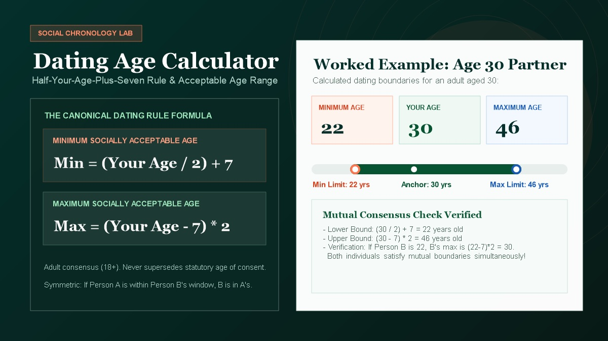

Dating Age Calculator
Calculate your socially acceptable dating age range using the canonical half-your-age-plus-seven rule. Check relationship age gap symmetry, minimum and maximum dating boundaries, and evaluate partner compatibility.

Evaluate Dating Age Range
Calculations run 100% locally in your browser. No private relationship inputs are transmitted to external servers.
How the Dating Age Formula Works
The mathematical mechanics behind the minimum and maximum acceptable dating boundaries.
The half-your-age-plus-seven rule is the most widely recognized cultural heuristic for evaluating the social acceptability of relationship age gaps. The rule balances life stages, emotional maturity, and cognitive power dynamics without enforcing arbitrary rigid caps.
Youngest Socially Acceptable Age
To find the youngest person you can date according to consensus, divide your age by two and add seven:
If the formula yields a half-year (e.g., $19 \div 2 + 7 = 16.5$), standard convention rounds up to 17 or defers to the 18+ statutory adult baseline.
Oldest Socially Acceptable Age
The maximum acceptable age is derived by algebraically isolating the older partner's age from the minimum rule:
For example, an adult aged 28 subtracts 7 ($21$) and doubles it, yielding an upper dating boundary of 42 years old.
Worked Dating Age Ranges by Demographic Cohort
Standard minimum and maximum relationship windows across key age benchmarks.
| Your Age | Minimum Dating Age | Maximum Dating Age | Acceptable Range Window | Key Life Stage Dynamic |
|---|---|---|---|---|
| 18 Years | 18.0 yrs (Statutory Floor) | 22.0 yrs | 18 – 22 (4-Year Window) | Early college / emerging adulthood; peer parity critical. |
| 20 Years | 18.0 yrs (Statutory Floor) | 26.0 yrs | 18 – 26 (8-Year Window) | Transition from undergraduate studies into entry-level work. |
| 24 Years | 19.0 yrs | 34.0 yrs | 19 – 34 (15-Year Window) | Early career independence; expanding peer horizons. |
| 30 Years | 22.0 yrs | 46.0 yrs | 22 – 46 (24-Year Window) | Career consolidation; broader shared professional experience. |
| 40 Years | 27.0 yrs | 66.0 yrs | 27 – 66 (39-Year Window) | Established adulthood; biological age differences attenuate. |
| 50 Years | 32.0 yrs | 86.0 yrs | 32 – 86 (54-Year Window) | Mid-life maturity; shared values supersede chronological years. |
| 60 Years | 37.0 yrs | 106.0 yrs | 37 – 99+ (62-Year Window) | Senior life stage; multi-decade disparities common in late-life dating. |
The Historical Origins of the "Half-Your-Age-Plus-Seven" Rule
How a 19th-century French proverb transformed into a modern pop-culture relationship standard.
Despite widespread assumptions that the dating rule originated in modern sociological studies, its documented appearance dates back over 120 years to early Edwardian etiquette literature.
The rule was popularized in English by Franco-British author François Marie Anatole de la Tour d'Auvergne (writing under the pen name Max O'Rell) in his 1901 book Her Royal Highness Woman and His Majesty Cupid. O'Rell attributed the heuristic to an old French folk maxim recommending the ideal age for a bride relative to her husband:
“A gentleman should marry a lady who is half his age, plus seven years. Try it at any age, and you will see that it works out remarkably well.”
During the 20th century, the maxim evolved from a prescriptive matrimonial decree for older men into a two-way social threshold used by both men and women to define the boundaries of reasonable dating gaps. In 1931, American writer Malcolm Cowley referenced the equation as standard social parlance in Greenwich Village literary circles, and by the 1970s it had become a recurring fixture of syndicated relationship columns and romantic comedy scripts.
What Does Sociological Research Actually Say?
How real-world marital data and evolutionary psychology align with the mathematical rule.
The Buunk et al. (2000) Age Preference Study
In a landmark study published in Evolution and Human Behavior, researchers Bram Buunk, Pieternel Dijkstra, Douglas Kenrick, and Alan Keefe evaluated the minimum and maximum age preferences of men and women across the lifespan.
The empirical findings revealed a stark gender asymmetry: Men's minimum acceptable age closely matched the half-your-age-plus-seven rule across all age cohorts. However, women's minimum acceptable age was significantly higher than the formula predicted, particularly in young adulthood, where women rarely tolerated men more than 2 to 3 years younger than themselves.
Real-World Demographic Census Data
While the formula permits wide theoretical gaps (e.g., a 40-year-old dating a 27-year-old), national marriage statistics consistently indicate much narrower preferences in practice:
- United States (Census Bureau): In opposite-sex marriages, the husband is an average of 2.2 years older than the wife.
- United Kingdom (ONS): Over 84% of marriages feature an age difference of fewer than 6 years.
- Peer Cohort Preference: Shared cultural references, educational timelines, and financial life stages exert far stronger gravitational pulls than mathematical boundary limits.
The Mathematical Symmetry of the Dating Rule
Why the rule works simultaneously in both directions without contradiction.
A remarkable mathematical property of the half-your-age-plus-seven rule is that it is fully symmetric (reciprocal). If Person A is within Person B's acceptable dating window, Person B is mathematically guaranteed to be within Person A's acceptable window.
Formal Algebraic Proof of Reciprocity
Let Person A's age be $A$ and Person B's age be $B$, where $A > B$. For $B$ to be an acceptable younger partner for $A$:
To isolate $A$ from Person B's perspective (evaluating whether $A$ is an acceptable older partner for $B$):
- Subtract 7 from both sides: $B - 7 \ge \frac{A}{2}$
- Multiply both sides by 2: $2(B - 7) \ge A$
- Rearranging: $A \le (B - 7) \times 2$
Conclusion: The maximum age formula for Person B is identical to the rearranged minimum formula for Person A. Mutual consent is mathematically coherent!
Adult Safety, Statutory Limits & Power Dynamics
Why arithmetic formulas can never replace statutory protections or healthy relationship ethics.
Local criminal laws, statutory age of consent, and child protection acts strictly supersede any informal mathematical rule. The formula has zero legal force.
Law > HeuristicThe rule should only be applied between consenting adults. A mathematical output suggesting a 22-year-old can date a 17-year-old must be rejected under strict adult boundaries.
Consenting Adults OnlyLarge chronological age gaps frequently introduce unequal professional status, financial dependence, and life experience that require careful emotional self-awareness.
Ethical AwarenessNeurological brain maturation continues until age 25. Age gaps of 5+ years carry radically different developmental weight at age 20 versus age 40.
Cognitive Life StagesFrequently Asked Questions
Clear, direct answers about dating age gap limits, the half-your-age-plus-seven formula, and relationship research.
Need a deeper breakdown?
• Exact Date Spans: Age Difference Calculator →
• Editorial Method: Calculation Standards →
• Universal Chronology: Category Directory (27 Tools) →
What is the half-your-age-plus-seven dating rule?
The half-your-age-plus-seven rule is a widely cited social heuristic for estimating the socially acceptable minimum age of a romantic partner. To calculate the youngest person you can date according to consensus, divide your age in half and add seven years: Minimum Age = (Your Age / 2) + 7.
What is the maximum age I can date under the rule?
The maximum acceptable dating age is derived by algebraically isolating the older partner's age from the minimum rule: Maximum Age = (Your Age - 7) × 2. For example, if you are 30, your maximum acceptable partner age is (30 - 7) × 2 = 46.
Is the dating age rule mathematically symmetric?
Yes. The mathematical beauty of the rule is that it is perfectly reciprocal. If Person A is within Person B's acceptable dating window, Person B is guaranteed to be within Person A's acceptable dating window simultaneously.
Does the rule apply to teenagers or minors under 18?
No. The dating age rule is strictly an informal cultural heuristic intended for consenting adults aged 18 and older. It never supersedes statutory age of consent laws, criminal child protection statutes, or the legal age of majority in any jurisdiction.
Where did the rule originate?
The rule first appeared in print in 1901 in Max O'Rell's book Her Royal Highness Woman and His Majesty Cupid. Originally framed as advice for men seeking ideal brides, it was later popularized as a modern general guideline for socially acceptable relationship age disparities.
What does sociological research say about relationship age gaps?
Empirical studies (such as Buunk et al., 2000) show that while men's minimum acceptable age closely follows the half-your-age-plus-seven rule, women tend to maintain narrower acceptable age bands, and real-world marriage statistics reflect a much tighter average age gap of 2 to 3 years across western demographics.
Why does the acceptable age range expand as people get older?
The formula reflects developmental psychology: a 5-year gap between ages 15 and 20 involves dramatic discrepancies in cognitive maturity, legal status, and life stage. Conversely, a 5-year gap between ages 45 and 50 is developmentally inconsequential, as both individuals are firmly settled in mature adulthood.
Does this calculator store or transmit my inputs?
No. All calculations are executed completely inside your browser using client-side JavaScript. Age Calculator Lab does not track, collect, or store your personal age entries.
Research & Calculation Methodology
The calculation engine for this tool models the canonical algebraic formulation of the Half-Your-Age-Plus-Seven rule, cross-referenced against evolutionary psychology studies on mate selection age preferences (Buunk et al., 2000; Kenrick & Keefe, 1992) and national marital demographics from the US Census Bureau and UK Office for National Statistics.